M.Hiroi's Home Page
http://www.geocities.jp/m_hiroi/
Tcl/Tk GUI Programming
Mini Games
はじめに
Tcl/Tk を使って簡単なゲームを作ってみました。Oh!X 1999 春号、1999 夏号、2000 春号、2001 春号に掲載された拙作や、Puzzel DE Programming で作成したゲームの Tcl/Tk 版を公開しています。
ゲームを実行するには Tcl/Tk をインストールしてください。ゲームは Tcl/Tk 8.3 以降のバージョンであれば動作します。M.Hiroi は ActiveState の ActiveTcl 8.4.9.0 を使っています。ActiveTcl には Windows 用のバイナリが用意されているので、ダウンロードしてインストーラーを起動すれば、簡単にセットアップすることができます。
ダウンロードしたゲームは LHA 形式で圧縮されているので、Lhasa などのツールを使って解凍してください。あとは Tcl スクリプトファイル (拡張子が tcl のファイル) をダブルクリックするとゲームが実行されます。
どれも見たことがあるゲームだと思います。私は絵心の無いプログラマなので、画面デザインについては多くのことを要求しないでくださいね。Tcl/Tk は GIF 形式などの画像ファイルを扱うことができるので、不満のある方は改造しましょう。
権利・免責事項など
これらのゲームはフリーウェアとします。自由に使ってください。ただし、これらのプログラムは無保証であり、使用したことにより生じた損害について、作者「広井誠 (Makoto Hiroi)」は一切の責任を負いません。また、これらのプログラムを販売することで利益を得るといった商行為は禁止いたします。
Copyright (C) 1999-2005 Makoto Hiroi
マスターマインド
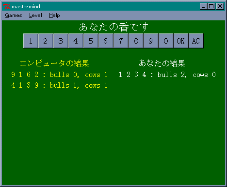
0 から 9 までの異なった 4 桁の数字を当てるゲームです。数字は合っているが桁は間違っている個数を cows で表し、数字も桁も合っている個数を bulls で表します。つまり、bulls が 4 になると正解となります。このゲームでは、コンピュータがあなたのお相手をいたします。少ない回数で正解したほうが「勝ち」、同じ回数だと「引き分け」となります。また、両者とも 10 回以内に当てることができない場合も「引き分け」となります。
- ファイル名
- mastermind.tcl : Tclスクリプトファイル
- mastermind.txt : 説明書
ダウンロードへ
（Oh!X 1999 春号掲載）
そろえてポン
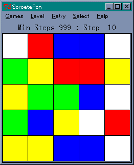
25 枚のパネルを同じ色に揃えるパズルゲームです。パネルをクリックすると、そのパネルと上下左右のパネルの色が変化します。揃える色はどの色でもかまいません。色は、2、3、4、5 色の中から選ぶことができます。クリアした問題は回数と共にファイルに格納されるので、最小回数で色を揃えるようにチャレンジすることができます。
- ファイル名
- spon.tcl : Tclスクリプトファイル
- spon.txt : 説明書
ダウンロードへ
（Oh!X 1999 春号掲載）
おとしてポン
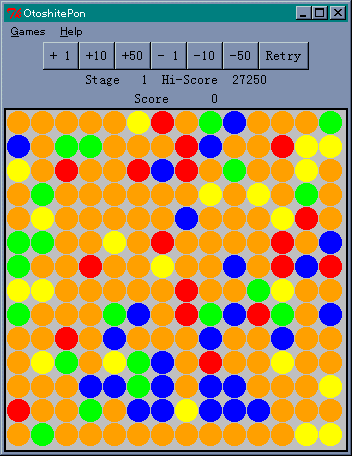
SameGame や SX-BlockDown に類するパズルゲームで、上下左右に 2 つ以上続いている同じ色の駒を取り除いていきます。空いた場所には、上の駒が落ちてきます。縦一列の駒がすべて消えると、それより右側にある駒が左へ移動します。
同時に消した駒の数を n とすると、(n - 1)の 2 乗だけ点数が入ります。全ての駒を消すと 10 万点のボーナスが入ります。また、同じ種類の駒を全て消した場合には、１種類につき 1 万点のボーナスが入ります。
付属のデータには、200 個の問題が用意されています。最初は簡単に高得点をねらえますが、後半になると難しくなります。スコアは保存されますので、納得するまでチャレンジしてください。
- ファイル名
- same.tcl : Tclスクリプトファイル
- same.dat : データファイル
- same.txt : 説明書
ダウンロードへ
（Oh!X 1999 春号掲載）
カラー(Kalah)

相手よりもたくさんの駒を集めれば勝ち、というゲームです。ルールは単純ですが、展開がスリリングでおもしろい思考ゲームです。
カラーの盤面は、6 個の穴が向かい合って並んでいます。左右にはカラーと呼ばれる穴があり、右となりが自分のカラーです。最初は、カラーを除く穴に6 個ずつ駒が入っています。自分のカラーに半分以上の駒（36 個）を集めることが勝利条件です。
ゲームは、自分の穴を選び、その中の駒を全て取り出して、右となりの穴から反時計回りで駒を一つずつ配っていきます。この時、自分の穴とカラー、相手の穴には駒を入れますが、相手のカラーには入れません。駒を配り終えた時に、次のようなスペシャルケースが発生します。
- カラーで配り終えた場合、もう一度駒を配ることができる。
- 自分の空の穴で駒を配り終えた場合、向かいの穴に相手の駒があれば、
両方の駒を自分のカラーに入れる。これを「両取り」という。
- 自分の穴に駒がなくなった場合、相手の穴に残っている駒を全て相手
のカラーに入れてゲームを終了する。
駒の配置によっては、連続してカラーに駒を入れることができます。また、うまく両取りがかかるようにすると、相手の駒をいっきに自分のカラーへ入れることができます。劣勢な状態でも、相手の穴に駒がなくなれば、3 の条件により大逆転も可能です。
なお、思考ルーチンを Tcl/Tk で記述しているため、思考レベルを上げると遅くなります。ご注意くださいませ。
- ファイル名
- kalah.tcl : Tclスクリプトファイル
- kalah.txt : 説明書
ダウンロードへ
（Oh!X 1999 春号掲載）
ナンバープレース
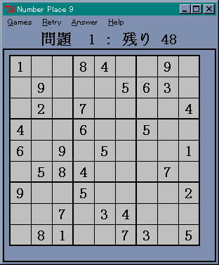
皆さんお馴染みのナンバープレースです。縦、横、太線の枠の中に、異なる数字を一つずつ埋め込んでいきます。たとえば、盤面が 9 行 9 列の場合、縦に 1 から 9 までの数字を一つずつ、横に 1 から 9 までの数字を一つずつ、太線の枠（3 行 3 列）の中に 1 から 9 までの数字を一つずつ入れます。盤面にはヒントの数字が表示されているので、これを頼りに空いている場所に数字を入れてください。盤面は 9 行 9 列の他に、12 行 12 列 (1 から 12 まで) と 16 行 16 列 (1 から 16 まで) を用意しました。
- ファイル名
- 9 行 9 列盤：画像
- nmpl09.tcl : Tcl スクリプトファイル
- nmpl09.dat : データファイル１
- nmpl0901.dat : データファイル２
- mknmpl09.exe : 問題自動生成
- 12 行 12 列盤：画像
- nmpl12.tcl : Tcl スクリプトファイル
- nmpl12.dat : データファイル１
- nmpl1201.dat : データファイル２
- mknmpl12.exe : 問題自動生成
- 16 行 16 列盤：画像
- nmpl16.tcl : Tcl スクリプトファイル
- nmpl16.dat : データファイル１
- nmpl1601.dat : データファイル２
- mknmpl16.exe : 問題自動生成
- 共通に含まれるファイル
- numplace.tcl : Tcl スクリプトファイル(サブルーチン）
- nmplhelp.txt : 取扱説明書
このゲームに付属している問題は、プログラムによって自動生成したものです。プログラムは DOS 窓で実行します。詳しい使用方法は取扱説明書をご覧ください。
変更履歴
解法プログラムの追加(2000/08/26)
今までのファイルには、解答を表示する Answer 機能用のプログラムが含まれていませんでした。解法プログラムを用意しましたので、ダウンロードメニューからゲットしてください。プログラムはナンバープレースと同じディレクトリに置いてください。メニュー Answer を選択すると、プログラムを起動して解答を表示します。ご迷惑をおかけしたことをお詫び申し上げます。
ダウンロードへ
（Oh!X 1999 夏号掲載）
ＴＥＮ（テン）
ＴＥＮは、足して 10 になる 2 枚のカードを取り除いていくパズルゲームです。カードは赤、青、黄、緑、の 4 種類があり、それぞれ 1 から 9 までのカードが 4 枚ずつ、計 144 枚のカードを全て取り除けばクリアです。
ＴＥＮには 3 種類のモードが用意されています。
- 上海モード
カードは 6 行 6 列 4 段に詰まれていて、次の条件を満たす 2 つのカードを取
り除くことができます。
- 同じ色で足して 10 になること
- 四辺の中で他のカードと接していない辺があること
2 の条件により、最初から中央にあるカードを取ることはできません。
- 四川省モード
カードは 9 行 18 列に配置され、次の条件を満たす 2 つのカードを取り除く
ことができます。
- 同じ色で足して 10 になること
- カードが無い場所を通って、三本以下の連続した直線でカードが結べ
ること
隣り合っている上下左右のカードは、1 の条件を満たせば取り除くことがで
きます。
- 真・上海モード
上海モードのルールが「上海」とはあまりにもかけ離れていたので、「真・
上海モード」を作成しました。このモードではカードがピラミッド状に詰まれ
ていて、次の条件を満たす 2 つのカードを取り除くことができます。
- 同じ色で足して 10 になること
- 左右どちらかの辺が他のカードと接していないこと
三種類のモードとも、カードはランダムに配置されるため、クリアできる保証はありません。ご注意くださいませ。
上海モード
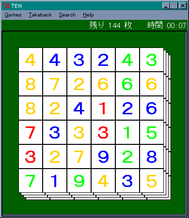
四川省モード

真・上海モード
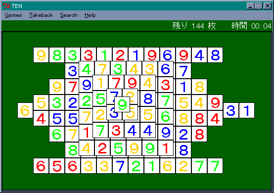
- ファイル名
- ten_上海.tcl : 上海モード用 TCL スクリプトファイル
- ten_四川.tcl : 四川省モード用 TCL スクリプトファイル
- ten2上海.tcl : 真・上海モード用 TCL スクリプトファイル
- ten_help.txt : このドキュメント
- ten_sub.tcl : 共通サブルーチン
ten_sub.tcl は、３つのモードで使うサブールーチンを集めたスクリプトファイルなので、ダブルクリックしてもゲームは実行できません。ご注意くださいませ。
ダウンロードへ
（Oh!X 1999 夏号、2000 春号掲載）
コラムス
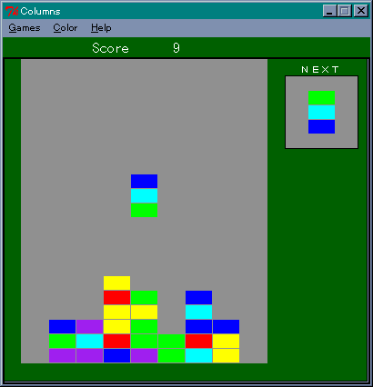
あの「テトリス」と双璧をなす、落ち物系パズルゲームの元祖です。旧 Oh!X で初めて付録ディスクがついた 1990 年 6 月号に掲載された Yet Another Column (作者：泉大介氏) を参考にしています。Tcl の処理速度に不安があったのですが、実際に作ってみるとあっけないほど簡単に動いてくれました。
簡単にルールを説明しましょう。コラムスは、上から落ちてくる３連のタイルを使って、積もったタイルを消していくパズルゲームです。３連のタイルには色がついていて、同じ色のタイルを縦、横、斜めのいずれかに３つ以上並べると、そのタイルを消すことができます。タイルは複数の方向に重複して並んでいてもかまいません。消した後の空間には、上のタイルが落ちてきます。
タイルの色は Yet Another Column では 6 種類でしたが、今回はタイルの色を 5 種類、6 種類、7 種類の中から選べるようにしました。それぞれトップテンのスコアを記録することができます。
- ファイル名
- columns.tcl : Tcl スクリプトファイル
- columns.txt : 説明書
ダウンロードへ
（Oh!X 2000 春号掲載）
MiniMax
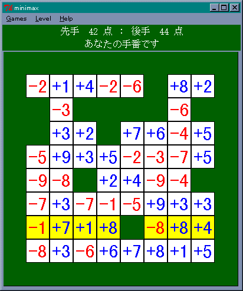
Puzzle DE Programming で作成したゲーム「MiniMax」の Tcl/Tk バージョンです。ルールの説明は Puzzle DE Programming 思考ゲーム「MiniMax」 を参照してください。
- ファイル名
- mimimax.tcl : Tcl スクリプトファイル
- mimimax.hlp : 操作方法
- mimimax.txt : 説明書
MiniMax のダウンロード(6,419 byte)
ならべてポン
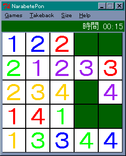
ならべてポンは、同じ色のカードを左から順番に並べるパズルゲームです。
１ ２ ３ ４ １ ２ ３ ４
┌─┬─┬─┬─┐ ┌─┬─┬─┬─┐
Ａ│y1│y3│ │r3│ Ａ│y1│y2│y3│ │
├─┼─┼─┼─┤ ├─┼─┼─┼─┤
Ｂ│r1│g2│g1│b3│ Ｂ│g1│g2│g3│ │
├─┼─┼─┼─┤ ├─┼─┼─┼─┤
Ｃ│ │b1│ │r2│ Ｃ│r1│r2│r3│ │
├─┼─┼─┼─┤ ├─┼─┼─┼─┤
Ｄ│b2│g3│ │y2│ Ｄ│b1│b2│b3│ │
└─┴─┴─┴─┘ └─┴─┴─┴─┘
ゲーム開始時 完成図
y : 黄色, r : 赤, b : 青, g : 緑
図：ならべてポン
ならべてポンは、空いている場所にカードを移すことでゲームを進めていきます。カードを空き場所に移動させるには、次の条件を満たさなくていはいけません。
- 一番左側の空き場所には１のカードを移すことができる。
- それ以外の空き場所には、左隣のカードと同じ色で番号が一つ大きいカードを移すことができる。
たとえば、上図のゲーム開始時には、(1,C), (3,A), (3,C), (3,D) の 4 つの空き場所があります。(1,C) は一番左側なので、ここに y1, r1, b1, g1 のどれかを移すことができます。(3,A) の左隣は y3 ですが、これより大きなカードはないので、この場所にカードを移すことはできません。(3,C) の空き場所は、左隣のカードが b1 なので (1,D) にある b2 のカードを移すことができます。
このようにカードを移動させて、左から順番にカードを並べます。どの行にどの色のカードを並べるかは自由です。この例では A 行に黄色を並べていますが、解けるのであれば、B, C, D のどの行に並べてもかまいません。移動できるカードが無くなったならば「手詰まり」となります。
盤の大きさは、4 行 4 列、5 行 5 列、6 行 6 列の 3 種類から選ぶことができます。盤が大きくなるとカードの種類と枚数が増えるので、パズルの難易度は高くなります。また、カードはランダムに配置されるので、解けない場合もあります。ご注意くださいませ。
- ファイル名
- napon.tcl : Tcl スクリプトファイル
- nap_help.txt : 説明書
ダウンロードへ
（Oh!X 2001 春号掲載）
ＳＥＶＥＮ
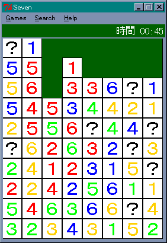
ＳＥＶＥＮは数字が書かれた 72 枚のカードを全て取り除くパズルゲームです。カードは 10 行 8 列の盤に並べられていて、カードを取り除くには、次の条件を満たさなくてはいけません。
- 同じ色のカードであること
- 同じ高さ（行）にあること
- 2 枚のカードが足して 7 になること
カードを取り除いた後の空き場所には、上のカードが落ちてきます。それから、数字以外にも ？ が表示されたワイルドカードが 8 枚あります。ワイルドカードをクリックし、次に数字カードをクリックすると、数字カードをワイルドカードの位置へ移動させることができます。
スコアは数字カードを全て取り除くまでの時間です。ただし、ワイルドカードを使うと、1 枚につきスコアが 10 秒加算されます。ワイルドカードをうまく使って、ハイスコアを目指してください。
- ファイル名
- seven.tcl : Tcl スクリプトファイル
- sevenhelp.txt : 説明書
ダウンロードへ
（Oh!X 2001 春号掲載）
ブロックアップ
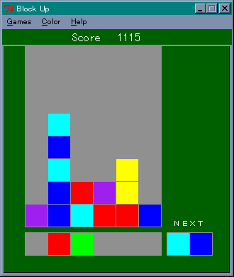
ブロックアップは、落ち物系パズルを逆にしたようなゲームで、下からブロックを押し上げて、積まれているブロックを消していくパズルゲームです。一番下のラインにある二個一組のブロックを左右に動かし、適当な位置でブロックを押し上げてください。ブロックには色がついていて、同じ色のブロックを縦、横、斜めのいずれかに 3 つ以上並べると、そのブロックを消すことができます。ブロックは複数の方向に重複して並んでいてもかまいません。消した後の空間には、上のブロックが落ちてきます。
ブロックの操作はキーボードを使って行います。
| キー | 動作 |
|---|
| 4, カーソルキー左 | ブロックを左に移動 |
| 6, カーソルキー右 | ブロックを右に移動 |
| 5, カーソルキー下 | ブロックの順番を入れ替える |
| 8, カーソルキー上, スペース | ブロックを押し上げる |
| S | ゲームの開始 |
ブロックは 6, 7, 8 種類の 3 つの中から選ぶことができます。ブロックの種類が多くなるほどゲームの難易度は高くなります。得点は次の式で計算します。
(消したブロックの数 * 連鎖ボーナス) の 2 乗
連鎖とは、ブロックが消えて上から落ちてきたブロックによって、同じ色のブロックが 3 つ以上並んでブロックが消えることです。連鎖ボーナスは連鎖回数が増えると共に、1 -> 2 -> 4 -> 8 -> 16 ... と増加していきます。時間制限はありません。うまく連鎖を起こして高得点を狙ってください。
- ファイル名
- blockup.tcl : Tcl スクリプトファイル
- blockup.txt : 説明書
ダウンロードへ
（Oh!X 2001 春号掲載）
ダウンロード
●Windows 版
●Linux 版
Linux 版は Tcl/Tk 5.6 (Lubuntu 14.10), Tcl/Tk 5.5 (Kona Linux 2.3) で動作確認しました。Debian 系の OS では、次のコマンドで Tcl/Tk をインストールすることができます。
sudo apt-get install tcl tk
ダウンロードしたファイルは tar + gzip で圧縮されています。端末で操作する場合、ファイルは次のコマンドで展開することができます。
tar zxvf minigame.tar.gz
tar zxvf minigame2.tar.gz
サブディレクトリ minigame (or minigame2) が作成されます。あとは、サブディレクトリに移動して、端末で ./Tclスクリプトファイル名 を入力すると、ゲームが実行されます。
Copyright (C) 1999-2014 Makoto Hiroi
All rights reserved.